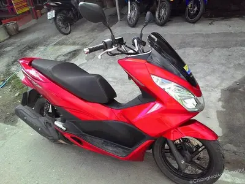

Is Getting a Thai Licence Worth the Effort?
Yes. Unambiguously yes. Riding or driving on an International Driving Permit alone is a grey zone with a ticking clock. A Thai licence, once you have it, is yours for 5 years, accepted everywhere in the country, and the foundation for a Thai IDP that lets you drive legally abroad. The process has a reputation for being opaque, but it is entirely manageable with the right preparation. One day, properly organised, and you walk out with a licence.
The Chiang Mai Department of Land Transport (DLT) processes hundreds of foreign applicants every month. The system is not hostile to foreigners. It rewards preparation. Come with the wrong documents and you will be sent home. Come with everything in order, arrive early, and the whole process is usually done before lunch.

Step 1: Build Your Golden Folder Before You Leave Home
This is where most expats trip up. They show up at the DLT with a confident attitude and an incomplete folder. The DLT staff are not going to improvise with you. Either you have it or you come back.
Here is the complete document checklist. If you are applying for both a car and a motorbike licence, every item marked with an asterisk needs to be duplicated. Two separate files, processed separately.
The Document Checklist
- Residency Certificate* - Issued by Chiang Mai Immigration (the main office on Airport Road, not Promenada for this) or your home country's Embassy in Thailand. Must be dated within the last 30 days. This is the document that confirms you are legally residing in Thailand and it is non-negotiable.
- Medical Certificate* - Any local clinic can issue this. Ask specifically for a "driving licence medical certificate" (ใบรับรองแพทย์สำหรับใบขับขี่). It involves a brief blood pressure check and usually costs 100-300 THB. Valid for 30 days from issue. Do not get this weeks before you plan to go.
- Passport + Copies* - You need copies of: your photo/bio page, your current valid visa page, and your most recent entry stamp. Sign every single copy in blue ink. Not black. Blue. This is a Thai bureaucracy convention and it matters.
- Existing Foreign Licence (if applicable) - If you hold a valid licence from your home country along with an International Driving Permit (IDP) or a certified Thai translation of your licence, you can typically skip the practical driving test. Bring the original plus copies.
Important: Plan your Residency Certificate at least 2-3 days before your DLT appointment.
The main Immigration office on Airport Road (71 M.3 Airport Road, Suthep) no longer reliably issues same-day certificates. Processing now typically takes 1-3 business days. Bring a stamped self-addressed envelope so they can post it to you if it is not ready on collection day. Never leave this for the morning of your DLT booking.
If you need it faster, two agencies specialise in next-day Residency Certificates:
- Colonel Visa - Located directly across the road from the Airport Road Immigration office. They know the process inside-out and regularly turn certificates around the next working day.
- Napa Visa Services - Based in the Chang Klan area. Good option if you are staying south of the Old City. Also offers next-day service.
Agency fees typically run 500-1,500 THB on top of the government charge. Worth it if your DLT slot is already booked.
Step 2: Choosing Your DLT Office
Chiang Mai has two DLT offices that handle private driving licences:
| Office | Location | Expat Verdict |
|---|---|---|
| Hang Dong (Mae Hia) Branch | South of the city, near Hang Dong | Preferred by most foreigners. Generally smoother for foreign applicants, English signage, and staff more accustomed to the foreigner process. |
| North Branch (Mae Rim area) | North of the city, near Mae Rim | Less foot traffic but further out. Worth considering if you live in the north of the city or the queue app shows shorter waits. |
For most people based in Nimman, the Old City, or Santitham, the Hang Dong branch is the standard choice. Budget around 30-45 minutes to get there depending on where you are staying.

Book the DLT Smart Queue App First
This is not optional anymore. The DLT has been rolling out a queue booking system and walk-in availability is shrinking. Download the DLT Smart Queue app (available on iOS and Android), select the Chiang Mai branch, and book a slot at least a few days in advance.
Even with a booking, arrive 30 minutes early. The queue system has its own flow and staff start processing before the official opening time. Turning up at exactly your booking slot time can mean watching everyone else who arrived at 7:30 get processed ahead of you.
Step 3: The DLT Process from the Front Door
Counter 27: Your Foreign Applicant Starting Line
When you walk into the Hang Dong DLT, navigate to Counter 27. This is the designated counter for foreign applicants. Staff here are used to dealing with non-Thai speakers. Hand over your complete document folder. They will check everything methodically.
If your paperwork is in order, you will receive a queue number and be directed to the physical testing area. If anything is missing, you will be sent home. There is no workaround on the day.
The Physical Tests
These are straightforward. Nobody fails them under normal circumstances. Four tests:
- Colour Blindness Test - Identify coloured dots on a chart. Standard Ishihara-style plates.
- Peripheral Vision Test - A device where you look forward while coloured lights appear at the edges of your field of vision. You call out the colours.
- Depth Perception Test - Two vertical sticks inside a box. You press a button to align them. Takes about 30 seconds.
- Reaction Test - Sit at a machine with a brake pedal. A red light activates and you press the brake. Tests your reaction time. Relax. It is not designed to fail people.

Step 4: Theory and Practical Tests (If Required)
If you are converting a valid foreign licence (with IDP or certified translation), you will typically skip the practical test entirely. The DLT accepts this as proof of competence and processes you straight to licence printing after the physical tests and any required video viewing.
If you do not have a foreign licence to convert, you go through the full testing process:
The Safety Video
A mandatory road safety video ranging from one to five hours depending on the day and the system. There is an e-learning version available through the DLT website that you can complete before your appointment, which can significantly reduce your time at the office. Check the DLT website for the current e-learning option as availability changes.
The Theory Test
50 multiple-choice questions on Thai road rules. You need 45 correct answers to pass (90%). An English language version is available and the questions are drawn from a published question bank. Spend a few hours studying the Thai road rules beforehand and you will be fine. The questions are not trick questions. They are testing whether you understand basic road safety.
Common fail point: Not reviewing Thai-specific rules. Speed limits in school zones (30 km/h), helmet law specifics, and right-of-way at unmarked intersections come up regularly. These differ from Western defaults.
The Practical Test
Conducted on the DLT's on-site course. For motorbikes, this includes a slow-speed balance section (riding through poles) and a braking test. For cars, a basic parking and navigation course. If you can drive in Chiang Mai traffic, the DLT course is considerably easier.
Step 5: Understanding the Licence Timeline
Thai driving licences do not work the same way as most Western countries. There is a deliberate upgrade path, and if you are on a long-term visa, this matters considerably.
The 2-Year Temporary Licence
Every first-time applicant in Thailand receives a 2-year temporary licence, regardless of driving experience or existing foreign licences. No exceptions.
| Licence Type | Cost | IDP Eligible | Who Gets It |
|---|---|---|---|
| 2-Year Temporary (Car) | 205 THB (~6 AUD) | No | All first-time applicants |
| 2-Year Temporary (Motorbike) | 105 THB (~3 AUD) | No | All first-time applicants |
The critical pitfall: the 2-year licence cannot be used to apply for a Thai International Driving Permit (IDP). If you need to drive legally in other countries using a Thai IDP, you must wait for the 5-year upgrade.
The 5-Year Permanent Licence
Once your 2-year licence expires (or within 3 months of expiry), you can apply for the 5-year licence. The process is simpler than the initial application: same physical tests, document check, and counter process. No theory or practical tests required.
The visa requirement is the catch most people do not know about until they are at the counter. To receive the full 5-year version, you generally need to be on a Non-Immigrant visa category. This includes:
- Non-Immigrant O (Retirement, Marriage)
- Non-Immigrant OA (Long Stay)
- Non-Immigrant B (Business, Work Permit)
- Non-Immigrant ED (Education)
- LTR Visa (Long-Term Resident)
- DTV (Destination Thailand Visa)
If you are on a Tourist Visa or Visa Exempt entry when you come to renew, some officers will only issue another 2-year licence. This varies by officer and branch. Your best move is to time your renewal for when you have a Non-Immigrant visa current.
The Thai IDP: Driving Abroad with a Thai Licence
Once you have the 5-year licence, you can apply for a Thai International Driving Permit at the same DLT office. The Thai IDP is valid in all countries that recognise the Geneva and Vienna Road Traffic Conventions. Cost is minimal (100-200 THB plus passport photos). Valid for 1-3 years depending on your remaining licence validity.
Step 6: The Private Driving School Route
If the DLT process feels overwhelming, or if you genuinely need driving training before attempting the test, Chiang Mai has several DLT-certified private driving schools worth knowing about.
Mainstream Option: Established Driving Schools
Schools like CM Driving School and Safety Driving School near the city centre offer full packages. You pay a higher fee (typically 3,000-5,000 THB) which covers training on their private course and the actual licence tests on-site. Once you pass, they give you a certificate that you take to the DLT to simply collect your printed licence card. You skip the DLT's testing queues entirely.
This route makes sense if you are anxious about the theory test, want actual driving practice before the practical test, or simply prefer a guided, managed process over navigating the DLT alone.
Deep Cut: The Local Language School Route
Some of the Thai language schools (ED visa holders know these well) have informal arrangements with local driving instructors who guide students through the DLT process as a group. If you have a contact at a language school, ask. The cost can be lower and the experience is far more relaxed than going solo. No formal guarantee, but several long-term expats in Santitham and the Old City use this route regularly.
Dress Code, Timing, and the Details That Matter
The DLT is a Thai government building. Dress accordingly. Shoulders must be covered. Long trousers or skirts. No flip-flops. No sleeveless shirts. Turn up in beachwear and you will be asked to leave. Staff will not process you. This happens regularly and it is entirely avoidable.
Timing Your Visit
- Best time to arrive: 7:30 AM, even with a Smart Queue booking.
- Avoid Mondays and the first day after a public holiday. The queues are brutal and staff are catching up from closures.
- Avoid smoky season (February to April) if you are sensitive to air quality. The wait areas at the DLT are partially open-air. Check AQI before heading out.
- Budget the full morning. Even a smooth visit takes 3-4 hours. Bring water, a snack, and something to read.
The Two-Set Rule: Applying for both a car and motorbike licence? You need two completely separate document sets. Two residency certificates. Two medical certificates. Two sets of passport copies. They are processed as separate files even though you are the same person standing at the same counter. Do not show up with one set thinking you can photocopy it on the day.
The Birthday Extension Trick
This is a genuine feature of the Thai system, not a workaround. If you renew your 5-year licence after it expires but within the legal grace period, the new 5-year term is calculated from your next birthday rather than from the renewal date. In practice, this can give you up to 5 years and 11 months on the licence. Not an emergency move, but worth knowing if your expiry falls close to your birthday.
Guru Tip
The Residency Certificate and Medical Certificate have a 30-day validity window each. Co-ordinate them. A common mistake is getting the medical certificate on day one, spending two weeks sorting out other things, then finding the medical certificate has expired by the time you actually get to the DLT. Get both documents in the same week, book your DLT appointment immediately, and treat the 30-day window as a firm deadline, not a comfortable buffer. Same-week medical certificate, same-week residency certificate, next-week DLT. That is the rhythm that works.
Common Questions
Q: Can I drive on my International Driving Permit (IDP) instead?
A: Yes, legally, for up to 90 days from your entry date. After that, an IDP alone is insufficient and you are technically driving unlicensed. In practice, enforcement is inconsistent. In principle, it is not worth the risk when the Thai licence process is genuinely manageable.
Q: My home country licence is not in English. What do I do?
A: You need either a certified Thai translation (available from translation agencies in Chiang Mai, typically 300-500 THB) or an International Driving Permit issued by your home country's motoring authority. An IDP is a standardised international booklet and the DLT accepts it without additional translation.
Q: What if I fail the theory test?
A: You can re-sit it. There is typically a waiting period before you can try again (usually 1-3 days). Study the question bank on the DLT's official website. The English version of the test covers the same material as the Thai version. Failure rate for prepared applicants is very low.
Q: Is a Thai licence valid for riding a motorbike and driving a car?
A: No. Car and motorbike are separate licence categories in Thailand. You must apply and test separately for each. The documents are the same. The physical tests are the same. The practical and theory tests differ. Many expats get both on the same day, which is entirely possible if you bring two complete document sets.
The Bottom Line
Getting your Thai driving licence in Chiang Mai is a single, well-organised day if you prepare properly. The DLT is not trying to make it hard for foreigners. It is simply Thai bureaucracy operating on Thai bureaucracy's terms: complete paperwork, correct format, correct procedure, early arrival. Respect the process and the process works. Come unprepared and it sends you home. Prepare your golden folder, book the Smart Queue app, arrive at 7:30 AM, and you will be licensed before lunch.
Related Guides
Once you have your licence sorted, these are the next logical reads: